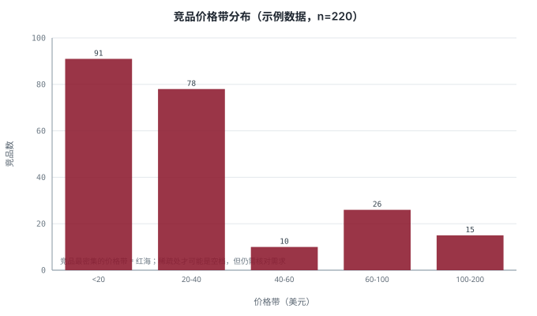
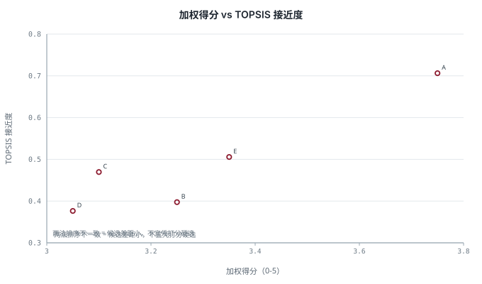
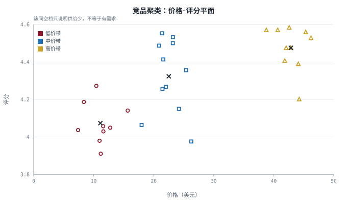
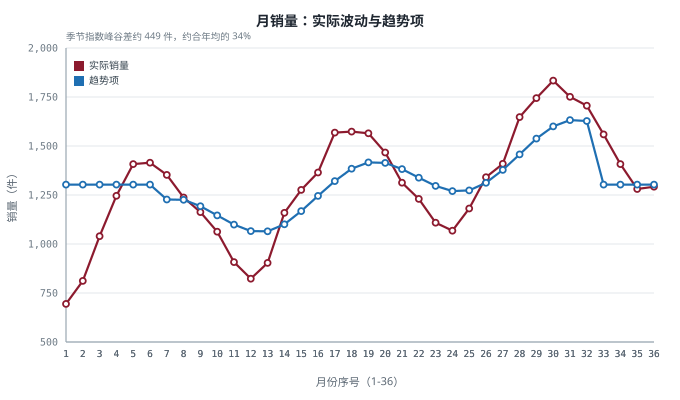
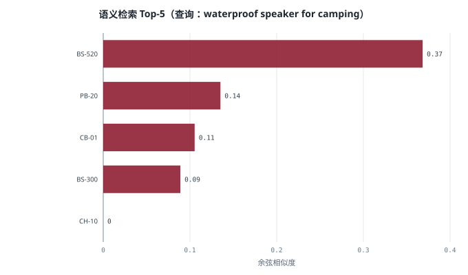
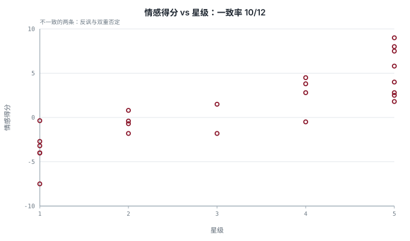
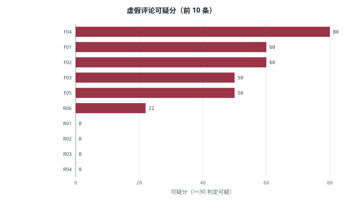
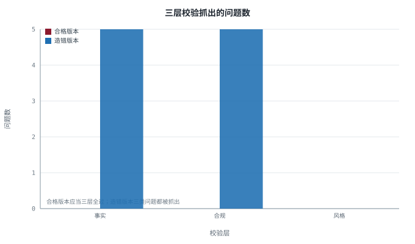
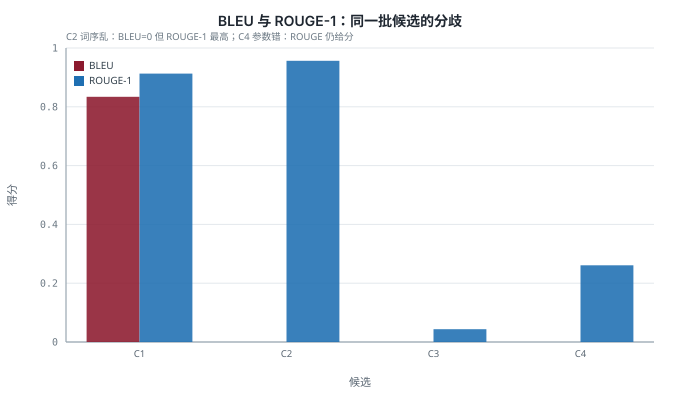

comtrade_batch.py
海关贸易数据批量拉取
按「报告国 × 年份 × HS 编码」批量查询 UN Comtrade 的进出口数据，自带限速与断点续跑。
- 输入
- 国家代码、年份区间、HS 编码列表
- 输出
- 原始返回 + 清洗表格 + 运行日志
- 依赖
- requests, pandas
- 章节
- 模块三 §2
这里放《智能贸易》各章用到的全部程序。每个算法程序都自带一张可视化图—— 图不是示意画，而是程序真实跑出来的输出；点开图可看原尺寸 SVG。
课件里讲方法，这里给代码。看代码不是目的，改参数、看输出怎么变才是。
11 个程序分四组。9 个算法程序的图由各自的 save_visual() 生成，
统一用 chartlib.py（纯标准库画 SVG，不依赖 matplotlib），
运行 python gen_visuals.py 可一次性重新生成 visuals/*.svg。
这三项带完整实操教程，脚本输出为数据文件而非图表。
按「报告国 × 年份 × HS 编码」批量查询 UN Comtrade 的进出口数据，自带限速与断点续跑。

读入你已合法获得的数据文件，做清洗、价格带分布、高口碑低竞争筛选与卖点词频统计。
两条数据路线：Google Places API（覆盖好、计费、存储受限）与 OpenStreetMap Overpass（免费、条款宽松）。
七类算法里可跑的四类，图为本程序实际输出。

同一批候选，用两种多准则方法排序，再做 2000 次权重扰动，看第一名会不会被翻转。

从购物篮算支持度／置信度／提升度找真搭配；再用 k-means++ 把竞品按价格—评分分群。

log-log 幂律拟合并给出 80% 预测区间；再用经典分解算季节指数与备货时点。

用「买家的说法」而不是品类词去检索商品库，并输出查询高权重词以便解释匹配原因。
先清洗再分析，图为本程序实际输出。

按星级分桶算 TF-IDF 得痛点词；手写吉布斯采样跑 LDA 发现主题；词典法做情感并处理否定。

把「好不好」拆成「哪方面好、哪方面差」，算改进优先级；再用 7 个可解释特征给评论打可疑分。
从模板到评估，图为本程序实际输出。

用「利益短语 + 证据 + 所以意味着什么」骨架生成五点；组装提示词；做事实/合规/风格三层校验。

手算 BLEU（含平滑）与 ROUGE-N，用四段构造文本演示指标失灵；再给一套标准写死的四维评审。
comtrade_batch.py 与 places_importers.py
需要真实 API 密钥与实时网络，输出是数据文件而不是可预知图形——具体的输出字段与用法见脚本顶部的文档字符串。
ecommerce_analyze.py 的图是用合成数据演示价格带分布，真实使用时把你的数据交给
load() + clean() 后再画。
pip install requests pandas（中文分词可选：pip install jieba）。raw/（原始数据，只读）、clean/（清洗结果）、code/（脚本），保证任何结论都能回溯到原始文件。code/ 目录，用命令行运行。本课程只教合法路径。三份脚本都只调用官方开放接口，或处理你已合法获得的数据文件。课程不提供、也不建议任何绕过反爬、伪造请求、突破平台限制的做法——这类行为违反平台条款，可能导致账号封禁与法律责任。
使用任何数据源前，请确认三件事：数据从哪来（来源是否公开/授权）、能用来做什么（条款是否允许商业使用）、能保存多久（是否允许长期存储）。